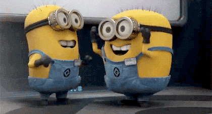
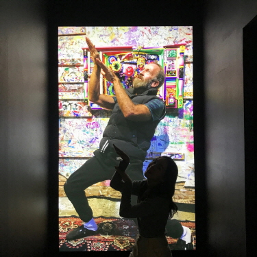
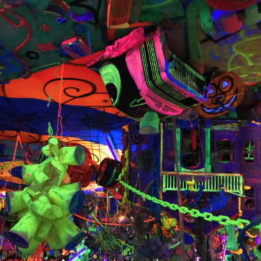
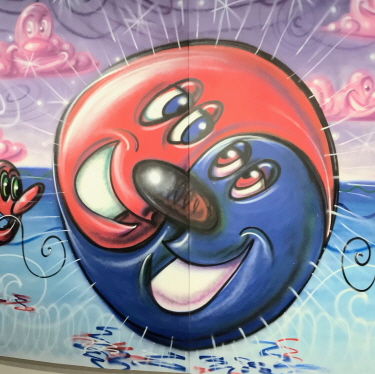
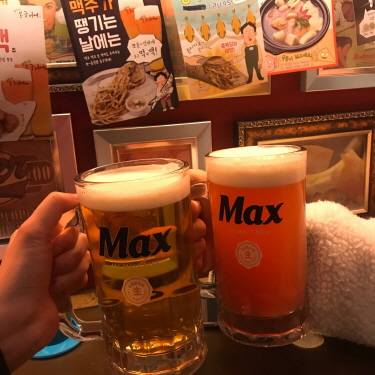

★ 언니, 동생과 함께 떠난 3박 4일간의 홍콩여행 ★

(씬나씬나)
나는 이번 여행을 통해서 확고한 내 여행관을 알게됐고 자매일지라도 많은 부분에서 다를 수 있다는 걸 배웠다.
자유로운 여행 스타일의 나와는 달리 언니는 계획파 여행러였다. 모든 식당과 핫플레이스를 알아보고 예약한 채 우리의 여행은 시작됐다. 그리고 결국 내 걱정은 현실이 됐다...
홍콩 도심에 위치한 산에서 야경을 보러 가려고 예약한 트램을 2시간씩 기다리다 다리가 빠질뻔 한 경험을 했다.. ('▽')
하지만 사실 야경이 너무 아름다워서 모든 게 용서됐다.

(혼돈의 카오스)
날씨는 습하고, 배는 고프고, 칭얼대는 동생을 업어주기까지 했지만
(발냄새 때문에 힘들었던 기억도 있지만...)
이런 기억보다는 새롭고 재밌었던 기억이 더 많기 때문에 이렇게 계획적인 여행을 해도 좋을 것 같다는 생각이 들었다. 그러나 사실은 가족여행이기도 하고, 동생도 어려서 꼼꼼한 계획을 세운 것이다...
무계획 여행은 혼자나 친구와 함께 가는 여행에서 하는걸로 헤헷 ('▽')
★ 팝아트의 거장, 케니 샤프 전시회에 다녀오다 ★

(케니샤프 따라잡기)

(인상깊었던 설치미술작품)

()

(역시 하루의 끝엔 시원한 맥주 치얼스-★)
(방학동안 열정의 You Know Younho로 산 내 자신이 자랑스럽다!)